上も中も下も好き [梅吉]
紙袋から中のものを取り出すと
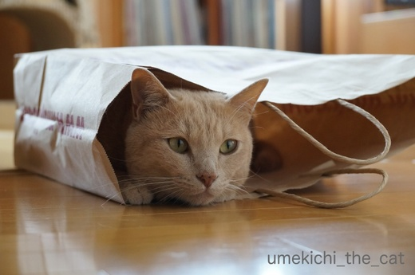
もれなく入ります。
キャットトンネルを商品化した人はこの辺りからヒントを得たのでしょうか。
新聞を読んでいるとどっかり上に座るので広告をひらひらすると
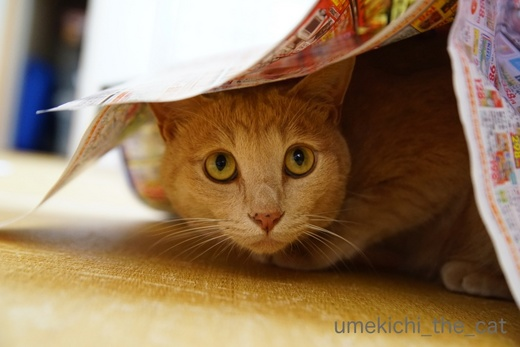
すばやく下に潜り込みます。しかもとっても嬉しそう＾＾
顔がわくわくしてますよw
梅吉に限らずとにかく猫は何かの上、中、下が大好きですよねー。
覆われている様な感覚が良いのでしょうか。
（上に乗るのは猫様だからw）
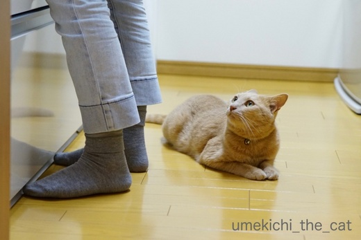
おかーさんの足元も大好きです。
梅吉さんを覆うほど大きくも幅広でもないんですけどwww
我が家のキッチンは狭いので動線はワンライン。
そこに座られるととっても動きにくいのでどけてもらえませんか？
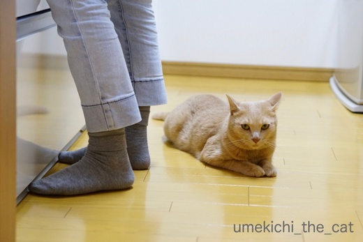
![[猫]](https://blog.ss-blog.jp/_images_e/101.gif) いやや ことわる
いやや ことわる
そんなこと言う子は
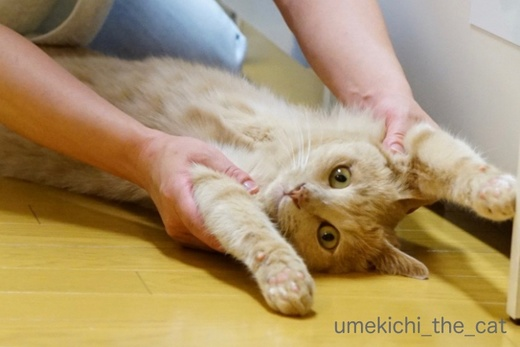
ばんにゃーーーい！！！
お腹に顔を押し付けてもふもふもしちゃいましたＯ(≧▽≦)Ｏ
この時期、もふった後は顔が毛だらけになっていつまでもムズムズして落ち着きませんが
どうしてもやめられませんwww
 ↑ガブッと一押し↑
↑ガブッと一押し↑
先日行った居酒屋さん。
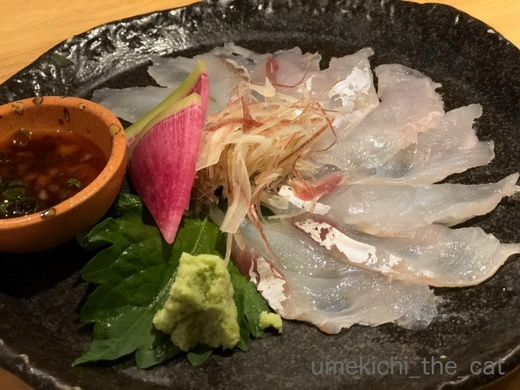
コチの薄造りと
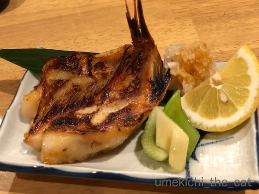
キンキ！小さいけどちゃんとキンキでした＾＾
脂が乗っていて美味しかったー。
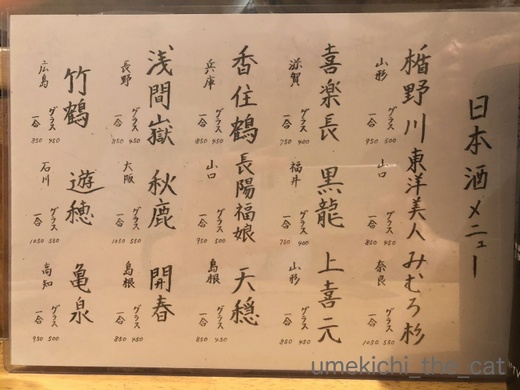
日本酒が進みましたよw 飲んだのは
東洋美人
みむろ杉
上喜元
竹鶴（ウィスキーではありません）
黒板メニューにあった田酒
ととりあえずのビール。
美味しゅうございました＾＾
〜kikiさん、300記事です＾＾教えていただいてありがとう♡ 〜
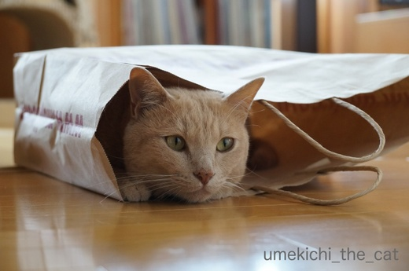
もれなく入ります。
キャットトンネルを商品化した人はこの辺りからヒントを得たのでしょうか。
新聞を読んでいるとどっかり上に座るので広告をひらひらすると
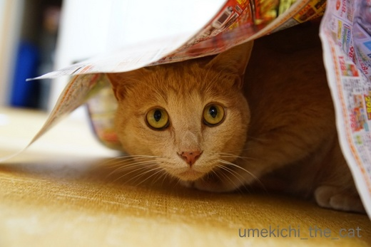
すばやく下に潜り込みます。しかもとっても嬉しそう＾＾
顔がわくわくしてますよw
梅吉に限らずとにかく猫は何かの上、中、下が大好きですよねー。
覆われている様な感覚が良いのでしょうか。
（上に乗るのは猫様だからw）
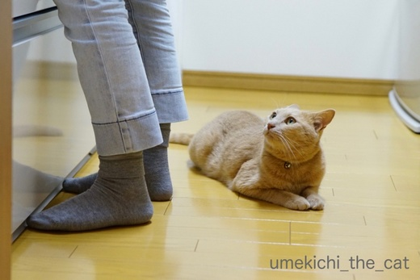
おかーさんの足元も大好きです。
梅吉さんを覆うほど大きくも幅広でもないんですけどwww
我が家のキッチンは狭いので動線はワンライン。
そこに座られるととっても動きにくいのでどけてもらえませんか？
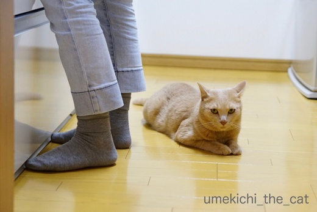
そんなこと言う子は
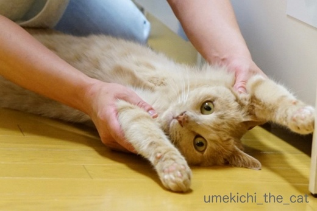
ばんにゃーーーい！！！
お腹に顔を押し付けてもふもふもしちゃいましたＯ(≧▽≦)Ｏ
この時期、もふった後は顔が毛だらけになっていつまでもムズムズして落ち着きませんが
どうしてもやめられませんwww
先日行った居酒屋さん。
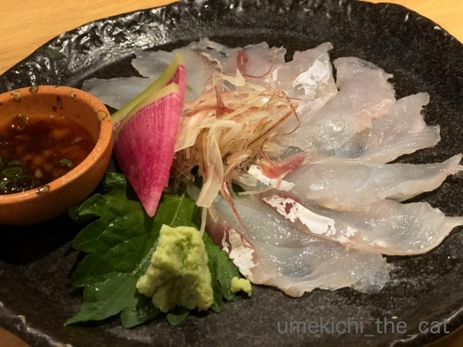
コチの薄造りと
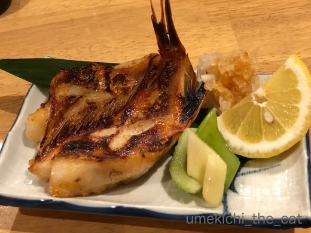
キンキ！小さいけどちゃんとキンキでした＾＾
脂が乗っていて美味しかったー。
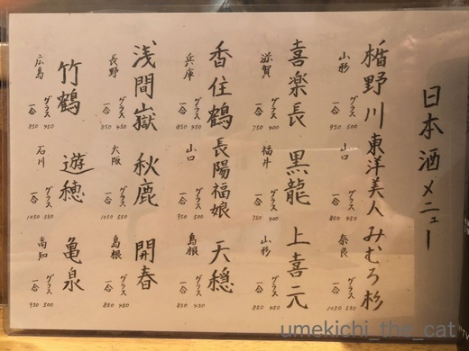
日本酒が進みましたよw 飲んだのは
東洋美人
みむろ杉
上喜元
竹鶴（ウィスキーではありません）
黒板メニューにあった田酒
ととりあえずのビール。
美味しゅうございました＾＾
〜kikiさん、300記事です＾＾教えていただいてありがとう♡ 〜

カフェオレ色の梅吉

梅吉 2023年8月10日 永眠


梅吉と出会った譲渡会

犬猫の理由なき殺処分ゼロ
妄想広告
UMEKICHI 光

爆発的に早い！
時々攻撃的！
Thanks to Mr.Boss365
爆発的に早い！
時々攻撃的！
Thanks to Mr.Boss365

そうそう、袋には必ず入りますよねぇ( ^ω^ )
ですが、我が家はノエルさんとニケさんが手持ち紐が首にひっかっかって
プチパニックになって家中駆け巡るという騒動を
起こしてくれたのでかみさんが見てる時（私だと監視がイマイチと言われたw）
だけ解放してます(⌒-⌒; )
ばんにゃ〜いの梅吉さん、目が点になってますよぉw
by ニッキー (2018-06-28 07:32)
300記事なのですね！
おめでとうございますー(≧∀≦)
うまい日本酒で私もお祝いしたいと思います！
by よーちゃん (2018-06-28 08:38)
300記事おめでとうございます＼(^o^)／
ちぃ様が、ひらひらフリルのを着たならば、
梅吉様も大喜びされるのではないかと(^^)
by middrinn (2018-06-28 09:02)
分かります！
こうやってキッチンですぐ後ろにいるんですよねー^^;
すり足で歩かないと、踏んづけちゃいそうなの(笑)
「ちょっとー、どけてよね！」って言っちゃいますよｗｗ
ばんにゃーいの梅吉君、超可愛い！！！
その日本酒メニュー、めっちゃ惹かれる♪
上から順番に全部飲みたくなるわ！
あー、ちぃさんと日本酒飲みたいなあ(笑)
by リュカ (2018-06-28 10:38)
言った通り299の次は（笑）300記事ですね。
おめでとうございます。
『いやや ことわる』って、カメラ目線じゃん（笑）
我が家は夫がキッチンに入ってくると狭く狭く感じます。
キットあの感じですね（笑）
by kiki (2018-06-28 10:49)
おはようございます。
記事３００回ですね！！「梅しごと」良いお仕事されてますね！！
ちぃさん＆梅吉君！！おめでとうございます！！（⌒ー⌒）
梅吉君は、上を見ている・・・決勝リーグを？？
そして、サムライブルーの勝利に万歳？？
ちぃさんは歓喜に酔って、お腹に顔をつける？？
ラストに美味しいお酒を飲んだ！！と推測します！？(=^･ｪ･^=)
by Boss365 (2018-06-28 10:59)
ばんにゃーーーい!! かわよーーい!! 300記事おめでとおーーっ!!
by zombiekong (2018-06-28 11:52)
ばんにゃ～い！梅吉さんかわいすぎる～！！(≧▽≦)
ウチでは絶対できません・・・。
お腹に顔を埋める前にクルンとダンゴムシのようい丸まって蹴り倒されます^^;
キッチンでも洗面所でもすぐ真後ろにいて、振り向きざまにパコンと蹴ってしまうことがあります。それでも来るんですよね～。
キンキ美味しそう♪このメニューだと日本酒ですね♪♪
みむろ杉、浅間嶽、竹鶴の３つだけ、飲んだことがありません！(#^^#)
by ゆきち (2018-06-28 12:10)
300記事おめでとう！梅吉くんもばんにゃ～い！
ばんにゃ～いの梅吉くんカメラ目線(≧▽≦)
おとーさんに助けを求めているかのようだけど、本当はラブラブを見せつけていたりしてｗ
猫にとっては我慢できない行動なんだろうね。みんなそうそう！って言ってそう。
提出しなければいけない書類とかも、テーブルに乗せておくとちょこんと座ってるしね。
家もキッチンは大賑わい！いちいち避けて歩かなくちゃいけなくて大変だよ～。寝ちゃう子もいるの(^-^;
by emi (2018-06-28 12:52)
こんにちはーーー＾＾
紙袋、だんぼーる、押し入れのふとんサンド、たたんだタオルの間に入って綺麗なタオル山を崩す、ゴミ箱があいてると入る、着替え中しらない間にクロゼットの中に侵入していい気分でいると何時間も出られないで悲しむ・・・・
等々、入っちゃいますねーーー。
梅吉ちゃん、キッチンではその場一点で動かないようにしていたら
やっぱりお邪魔みたいよ＾＾；だから、もみくちゃにされて遊ばれちゃうって、それも狙いなのよね(笑)
美味しそうなコチの薄造りちゃん＾＾食べたいわぁ。
日本酒、これはやばい写真です。で、田酒もお飲みになられたのね＾＾
きゃーーーーー('◇')ゞ
by ake_i (2018-06-28 13:17)
ばんにゃーーーい！！！
可愛すぎっ・・！
by yuppie (2018-06-28 14:01)
もれなく梅吉さんが入ってくれる♪
嬉しいですねぇ～(#^.^#)
足元にいるのはちょいと邪魔ですが
スリスリしてきたりしたら
たまりませんね！
ばんにゃーーーい♪
これは顔をうずめたくなります！！
モフモフって罪ですよね（笑
by きぃ (2018-06-28 15:28)
家の猫は小さな箱やあぐらをかいた足の中などが好きでした(^^)
いつもその姿を思い出しています。
日本酒は大好きなのですが、カロリーが高いので、大漁の日と決めています。
でも美味しそうですね～(^^)
by kou (2018-06-28 16:48)
ニャンコは本当に箱とか袋とかに入るの好きですね！
袋インした梅吉さんは安心している感じですね(^^)
by ma2ma2 (2018-06-28 19:06)
ニッキーさん＞
プチパニック、想像できます(^▽^;)
取ってあげようとしてもパニクるばかりで
大変なんですよねーwww
おおお、監視にもゴッドマザー様からの厳しい指導が！
ニッキーさんがんばれ〜ヾ(*ΦωΦ)ﾉ
よーちゃん＞
ありがとうございます＾＾
記事数が万単位の諸先輩からするとまだまだひよっこですけど(^_－)☆
冷酒がおいしい季節ですよねー。
梅吉が良い肴になれば嬉しゅうございますＯ(≧▽≦)Ｏ
middrinnさん＞
ありがとうございます＾＾
ひらひらフリル・・・
最近NHK朝ドラの影響でピンクパウスが再注目されているとか。
（ピンクハウス世代ですよー。）
あれ、可愛いんですが若い頃から似合わなくてw
歳を重ねた今トライしたら新たな世界が開ける？かも？？(*>艸<)
リュカさん＞
そうなの。
ひっそりと近寄ってくるので気づかなくて
結構蹴飛ばしちゃってますw
で、ごめんねー！！！と言いながら
おしりもみもみしたりばんにゃいしたりちゅーしたり( ´艸｀)
ホント！一緒に飲みたいね！！
絶対リュカさんの方が強いと思うので
私は途中から和らぎ水にするよーＯ(≧▽≦)Ｏ
kikiさん＞
次のキリの良い数字の時にもkikiさんに教えてもらっちゃうかも＾＾
キッチン、
にゃんこも（大きい）わんこさんも結構場所を取りますね( ´艸｀)
わんこさんに寝そべられたら大変ですwww
Boss365さん＞
ありがとうございます＾＾
これからも「良い塩梅」を心がけたいと思います(^_－)☆
すばらしいBoss365さんの予知！ん？梅吉の予知！？
今夜は途中梅吉と一緒に白目になるかもしれませんが
頑張って応援しますよーヾ(*ΦωΦ)ﾉ
zombiekongさん＞
ありがとうございます＾＾
ブログ同期、お互い細々でも続けて行きたいですね！
先日はスットコランドの「9999」を踏んで
次は自分のブログの300。
私、３の倍数の人、でしょうか（古っ）
ゆきちさん＞
しっかりカメラ目線しているところを見ると
「わしの きめのぽーず」とでも思っているのでしょうかw
足元に来る時はひっそりと忍び寄ってきてますよね。
私もよく蹴っちゃうので
一言声をかけて欲しいな、と常々思っております(-_-メ)
それでも来るのは、私たち愛されてるんですよねー♡
３つ「しか」ではなく「だけ」飲んだことがないなんて
なんて頼もしいお方なのでしょう！！
みむろ杉は芳醇旨口系かな。（好きなタイプです）
マッサンの生家の竹鶴は極めて普通でしたー。
残るは浅間嶽！！
emiさん＞
ありがとうございます＾＾
あんまり意識していなかった数字ですが
皆さんにお言葉をかけてもらえるとやっぱり嬉しいです！
ちょっとドヤ顔のカメラ目線w
これが構っているのがおっとだったら
すごく気まずそうな顔するのよ〜。
私に対して何か後ろめたい思いをするみたい(^▽^;)
なんでだろうwww
キッチンがわんこ、にゃんこで溢れている図を想像しちゃった＾＾
大変そうだけど楽しそう！
寝ちゃうなんてwきっとお母さんのそばは安心するのよね・・・
ake_iさん＞
乗るし、入るし、ニャンコは油断なりませんよね(⌒_⌒;
うちはとにかく「閉まっている」と気になってしょうがないらしく
大した興味があるわけはないのに扉を開けようとします。
引っ掻いて傷をつけられても困るので
我が家は扉という扉、ほとんど開けっ放しですw
たまにお客さんが来ても押入れ全開なんてこともあって
慌てちゃいますwww
日本酒美味しかったです！冷酒がぴったりの肴ばかりで・・・
初めて飲んでヒットだったのはみむろ杉。
芳醇旨口系が好きな私にはぴったりのお酒でした(๑˃̵ᴗ˂̵)و
田酒は間違いのない美味しさでした！！
by ちぃ (2018-06-28 21:32)
ばんにゃい！の時の表情が可愛い。
お腹モフ、顔につく毛が痒いのでうかつにできません。^^;
コチの薄作りやキンキ、美味しそうですね！
これはお酒が進みますね。^^)
by yes_hama (2018-06-28 22:07)
梅吉さん、日本の勝利を祝ってくれてありがとうにゃあ^^
by ニコニコファイト (2018-06-29 07:21)
そこに足を置きたいのに！って思う場所に寝転びますね（爆）
暑くなると床に行き倒れますので
避けながら歩くのが大変です＾＾；
300記事、おめでとうございます♪
by ぽちの輔 (2018-06-29 07:36)
yuppieさん＞
ふふふ＾＾梅吉もしっかりカメラ目線ですＯ(≧▽≦)Ｏ
きぃさん＞
どうしても邪魔な時は
冷蔵庫の上にジャーンプ！してもらってます( ´艸｀)
モフモフは・・・お風呂上がり以外はついついやってしまいますwww
kouさん＞
そうそう！無理めな小さな箱が好きですよね。
窮屈？と大きめの箱に差し替えると入らなくなっちゃったりw
日本酒は糖質も高いですよねー。
一度糖質オフ日本酒にチャレンジして見ましたが「・・・」でした (^▽^;)
どうせ飲むなら「たまに」「ちゃんとした」「美味しい」のを
飲むのが一番ですよね(^_－)☆
ma2ma2さん＞
安心して寝ちゃったりするので片付けられなくて
困る時が・・・(^▽^;)
yes_hamaさん＞
一度顔に毛がついてしまうといつまでもついているような気がして
気になってしょうがないですよね(^▽^;)
しかも痒くなってしまうなんて・・・
美味しい肴についついお酒が進んでしまいましたwww
ニコニコファイトさん＞
ホント！日本ばんにゃい！！ですねー(≧▽≦)
つぎもばんにゃい出来るかな？
ぽちの輔さん＞
そうそうまるで先を読んでいるかのようにピンポイントで！(*>艸<)
夏は全国の下僕がすり足になる季節ですねw
猫数が多いとテクニックも求められそうですwww
ちょとした節目の300です＾＾ありがとうございます！！
by ちぃ (2018-06-29 15:15)
あ、あれやったことありますか？猫転送装置！
我が家は未体験ですが、誰もはまらなさそうな予感・・・。
あえての動線で寛ぐ・・・ねこあるあるですね^^;（踏んじゃうよ〜）
コチの薄造り、おいしそう♡
日本酒メニューって、見ているだけで楽しいです（*´∀｀*）
竹鶴って日本酒があるのですね。
by Ja-Kou66 (2018-06-30 00:35)
梅吉くん襲われていますね。なのに真顔だわ(#^^#)きっと日常茶飯事なのですね～～(*^^*)
by palpal (2018-06-30 10:39)
Ja-Kou66さん＞
猫転送装置、幼い頃にやりましたよー。
テープを剥がそうと必死でしたwww
なんか違いますがホイホイはされた、のかな・・・
今やったらまた反応が違うかなーと思っています ( ´艸｀)
竹鶴はあの「マッサン」のご実家が作っているんですって。
酒造会社の名前そのものが竹鶴になった様で
大吟醸やら純米やら色々あるのですが私たちが飲んだのは何かは不明w
「燗すると美味しい」って書いてありましたが冷酒で飲んじゃいました。
palpalさん＞
毎日の様に襲ってますので梅吉にとってはほんの日常の一コマですw
ってか、襲われてゴロゴロ言うのよ＾＾
変態猫！？( ´艸｀)
by ちぃ (2018-06-30 10:49)
梅吉さんの友猫三郎、四郎の塗り絵（勝手に友猫）ていって失礼。
頑張って！塗ってます。
by ニコニコファイト (2018-06-30 17:49)
300記事おめでとうございます。
ばんにゃ~いの不意をつかれたような
梅吉さんの表情がかわいい♪
by ふにゃいの (2018-07-01 20:39)
ニコニコファイトさん＞
塗り絵、良い感じに仕上がっていますね＾＾
ふにゃいのさん＞
ありがとうございます＾＾
マイペースで細々ながらも長く続けていけたらいいな、と思っています！
梅吉、不意を突かれながらもカメラ目線でアピールも忘れておりませんwww
by ちぃ (2018-07-01 21:41)
お腹に顔を押し付けてモフモフ
私もよくやります！
顔が痒くなるけどやめられない´д`
by ryang (2018-07-02 20:31)
ryangさん＞
そうそう！この湿気の多い時期は
いつもより多めに(猫毛を）付けております！
って感じになりますよねw
いつまでも取れなくてむずむず・・・
by ちぃ (2018-07-04 16:00)